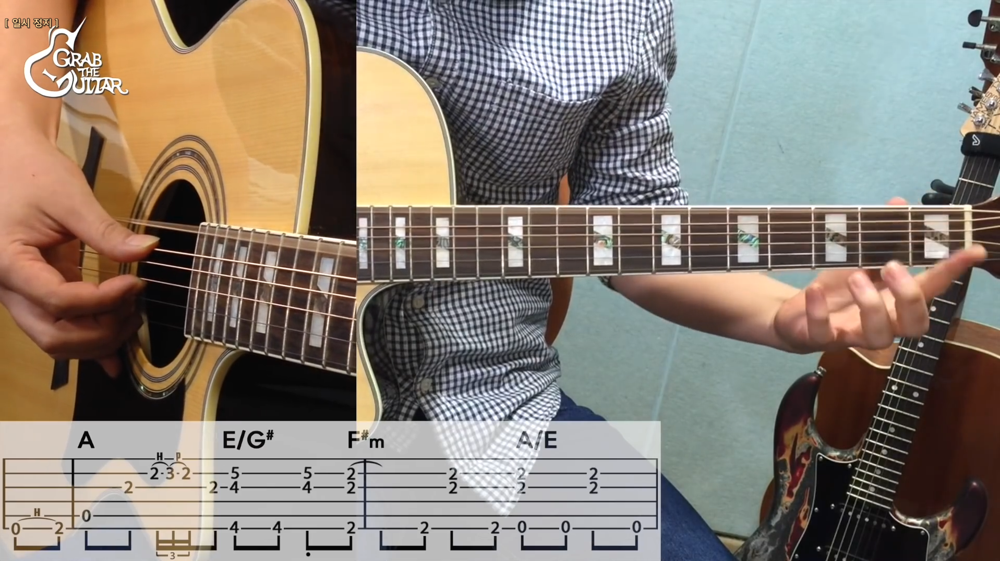
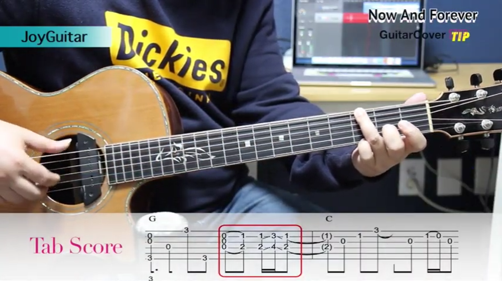

유튜브 사이트를 반응형으로 만들어 볼꺼예요.
순수 HTML, CSS를 이용해서 (Javascript 약간) 만들어 보고,
다음에 Javascript를 배우면 동적으로 서버에서 데이터를 가져오는 연습을 더 해보도록 할께요.
전체적인 반응형 포트폴리오 웹사이트를 완성해서 배포까지 하고 싶다면:
1M views 1 month ago
NSJSoft by nsj1M subcribers
Up next
여기서 잠시 도스 배치 파일에서 사용되는 파라메터(변수)에 대해 알아보
자. 도스 배치에서 사용되는 파라메터(변수)는 %0 %1 %2 %3 %4 %5 %6
%7 %8 %9와 같은 10개가 있다. 그리고 프롬프트 상태에서 맨 앞에 오게
되는 도스 명령어는 대개 변수 %0에 배당된다.NSJSoft by nsj82K views

여기서 잠시 도스 배치 파일에서 사용되는 파라메터(변수)에 대해 알아보
자. 도스 배치에서 사용되는 파라메터(변수)는 %0 %1 %2 %3 %4 %5 %6
%7 %8 %9와 같은 10개가 있다. 그리고 프롬프트 상태에서 맨 앞에 오게
되는 도스 명령어는 대개 변수 %0에 배당된다.NSJSoft by nsj82K views

여기서 잠시 도스 배치 파일에서 사용되는 파라메터(변수)에 대해 알아보
자. 도스 배치에서 사용되는 파라메터(변수)는 %0 %1 %2 %3 %4 %5 %6
%7 %8 %9와 같은 10개가 있다. 그리고 프롬프트 상태에서 맨 앞에 오게
되는 도스 명령어는 대개 변수 %0에 배당된다.NSJSoft by nsj82K views